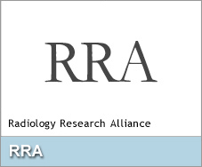
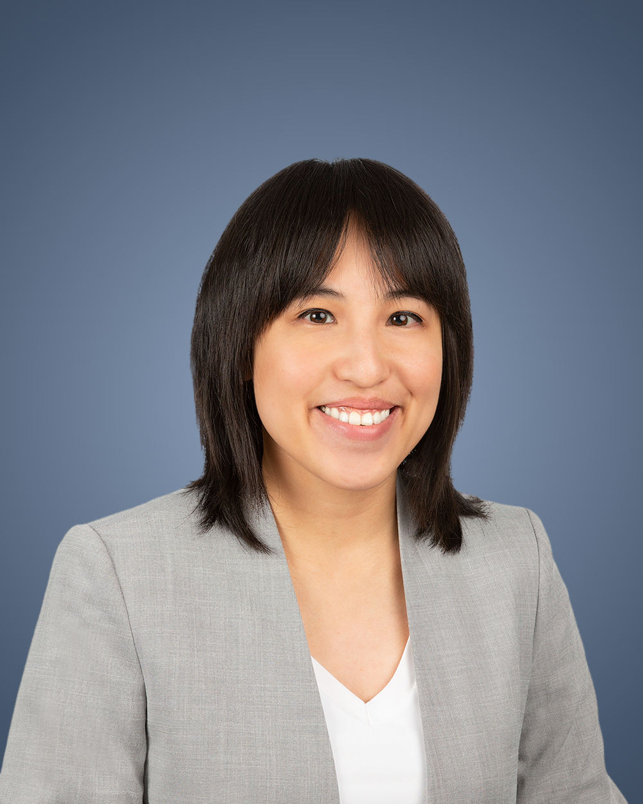

Co-lead
Shinjer Li
Eastern Virginia Medical School at Old Dominion University
About AI2Practice
AI2Practice is an open educational resource that connects the foundations of artificial intelligence with clinical evaluation, implementation, research, and teaching in radiology.

AI2Practice is co-led by Shinjer Li and Florence Doo, with contributors spanning radiology, imaging informatics, AI, education, and clinical implementation.
Eastern Virginia Medical School at Old Dominion University

University of Maryland Institute for Health Computing
Committee contributors bring perspectives from academic radiology, clinical AI, imaging informatics, education, and practice leadership.

UCLA David Geffen School of Medicine

University of California, Irvine

Duke University

Intermountain Health

Emory University

University of Crete School of Medicine

MetroWest Medical Center, Massachusetts
 Advisor · RRA representative
Advisor · RRA representativeEmory University / Children's Healthcare of Atlanta